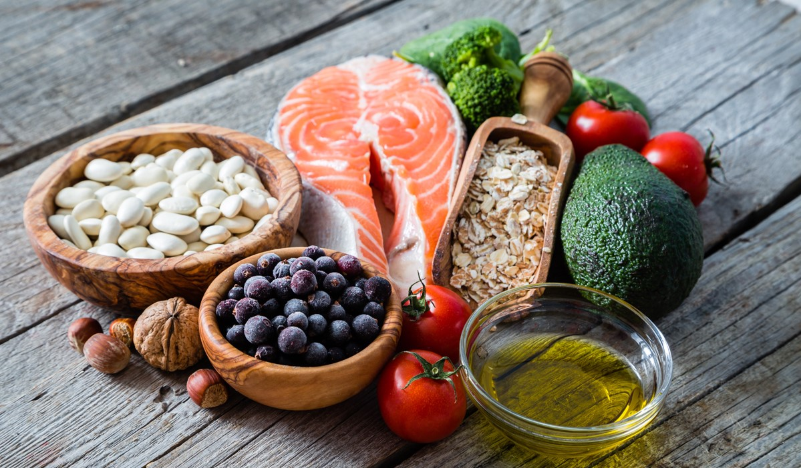

首頁
健康減肥飲食的好處
減肥飲食迷思
NG食物
餐點推薦

健康減肥飲食的好處
根據衛福部的統計，國人整體過重及肥胖，也就是身體質量指數BMI≧24的人口比率正在不斷上升。這個現象隨著年齡有逐漸增加的趨勢，且普遍佔有極高的比率，台灣更有著「亞洲最胖國」的稱號。肥胖問題逐漸成為了一種疾病，在國人的前十大死因中，就有多達八項與肥胖有關。人們開始產生健康意識，但要如何「適當」且「健康」的減肥又是另一門學問。
減肥飲食迷思
為了減肥，許多人都會用盡渾身解數，只為了讓體重計的指針不要再往右轉，但不論是在網路上或者坊間口耳相傳中，都充斥著太多太多的迷思。於是cutcut整理出幾個常見的減肥飲食迷思，希望能為所有想減肥的人建立正確的觀念，一起來看看自己是不是也陷入了減肥的迷思中吧！
減肥時的NG食物
減肥是一輩子的事業，很多人常陷入「胖了就減，減了又胖」的輪迴中，然而減肥並沒有想像中那麼難，只要改正不當的錯誤觀念和養成不會復胖的好習慣就能輕易維持苗條的身材。減肥不能吃什麼，就讓專家帶你深入了解。
餐點推薦
「減肥餐」一定很難吃嗎、想要減肥就得要餓肚子？減肥需要的只是一個方式，吃對食物，減肥就完全不需要挨餓。我們CUTCUT 提供各界減肥達人、健身教練、營養師提供的特製減肥餐，讓你吃飽吃得開心也能順利輕鬆達到理想中的身材！